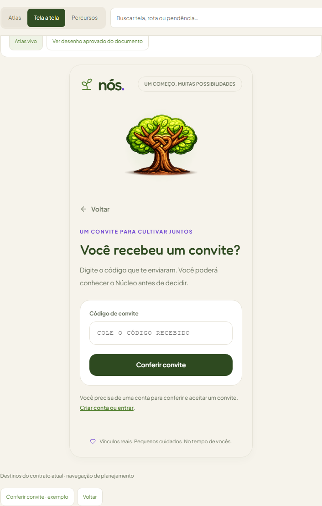
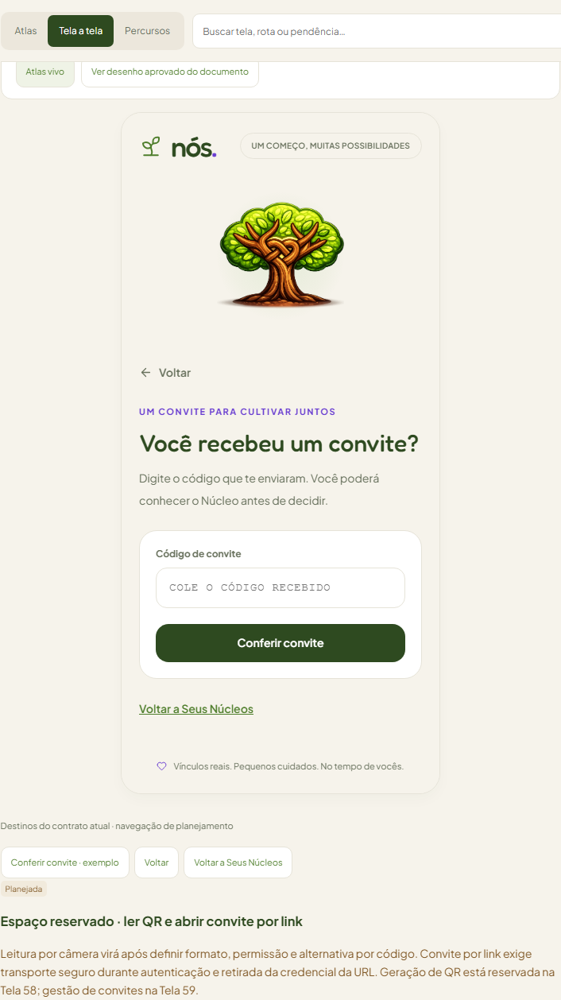
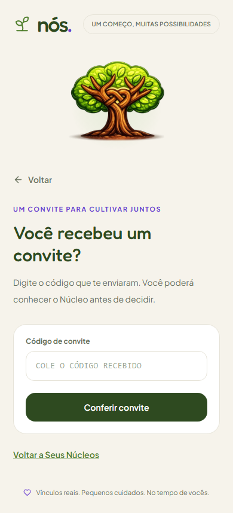
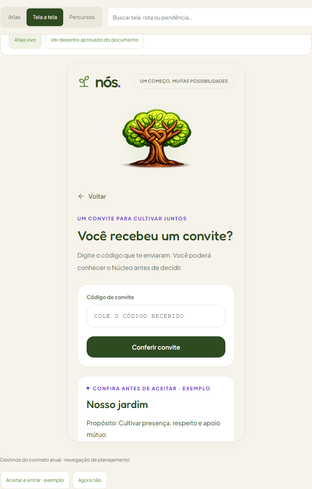
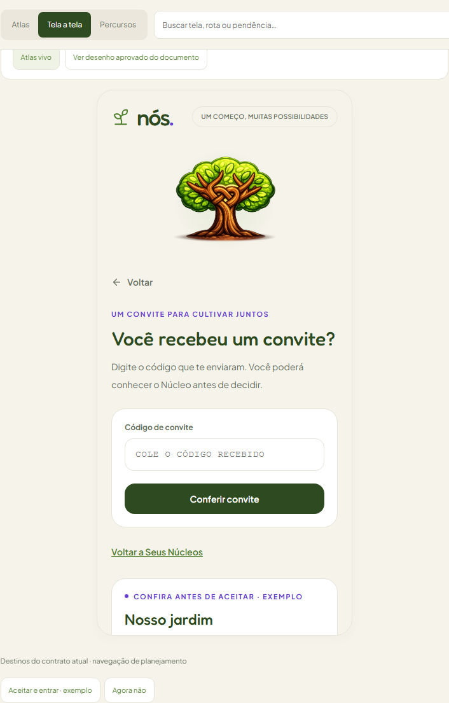
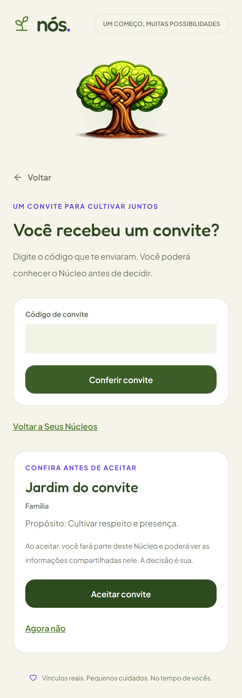
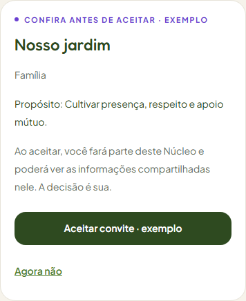
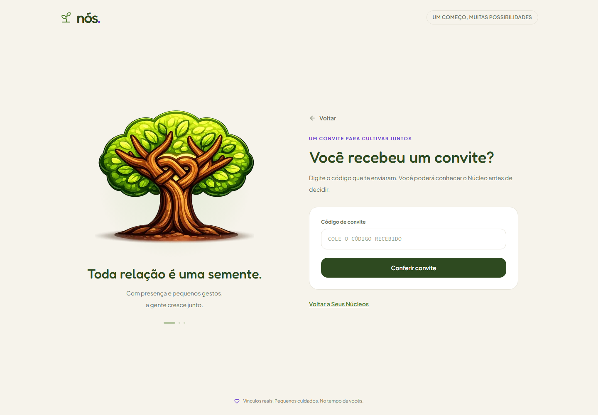
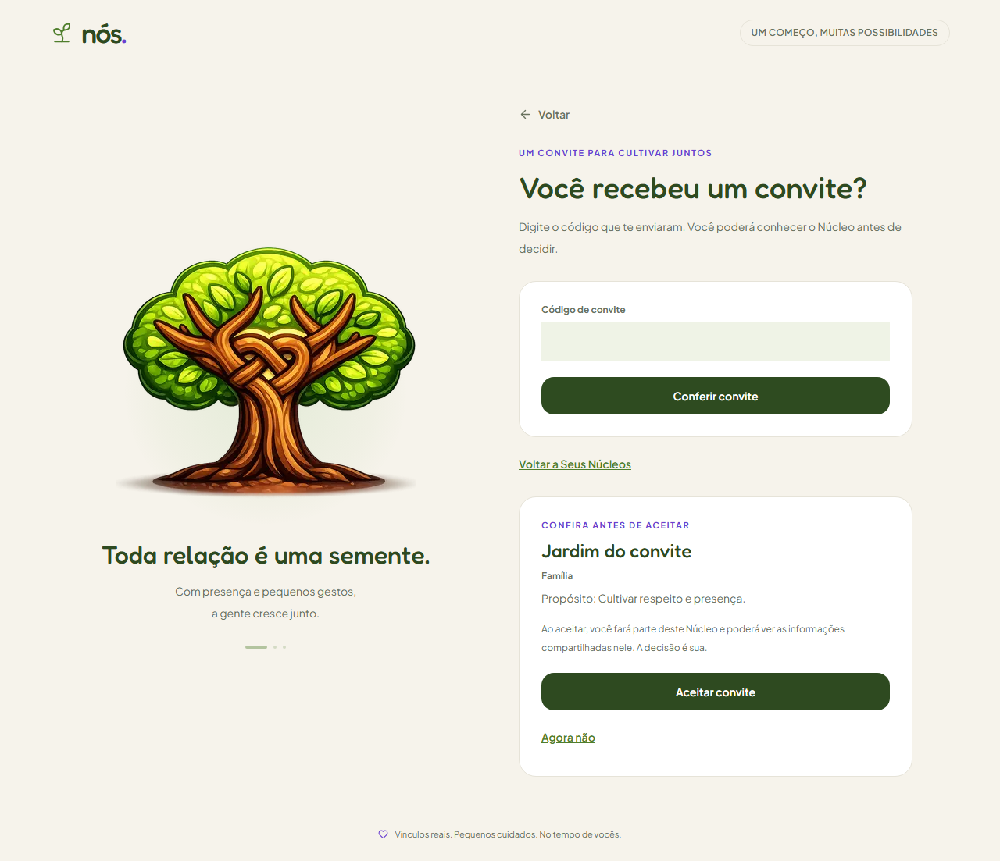
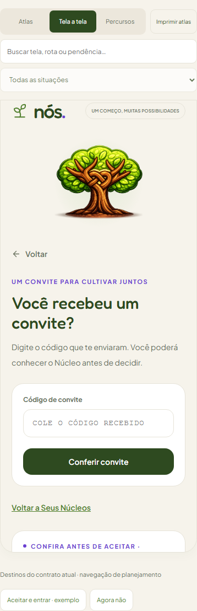

Percurso 04 — Entrar por convite
v0.13.3 · 2026-10-10 · Telas 10/11 · Atlas vivo · Contrato e pendências
Chegada direta: Conta quando necessária → Inserir convite → Prévia e decisão → Aceite explícito → Início → Seus Núcleos. Entrada comum passa por Seus Núcleos antes de inserir. Cadastro/confirmação/recuperação preservam retorno; autenticar não aceita convite.
A prévia mostra nome, tipo e propósito. Agora não retorna à lista sem criar associação. Editar código remove a prévia e o erro de aceite correspondente. O banco valida expiração/revogação novamente antes de entrar; repetir mantém um único vínculo e seu papel.



As Telas 10 e 11 são estados da mesma rota, /comecar/convite. A Tela 11 não cria uma página adicional.



Os exemplos do Atlas são ilustrativos. As capturas do aplicativo vêm de contas temporárias e Núcleos de teste no Supabase local, removidos depois. O código foi mascarado; nenhum convite utilizável está nesta galeria.




Reservas futuras: QR e câmera nas Telas 10/58; transporte do código por link na Tela 10; gestão de convites na Tela 59. Cada uma exige contrato e validação próprios. Nenhum botão futuro foi apresentado como integração funcional.
Limite operacional: cadastro/recuperação públicos dependem de SMTP e recebimento externo certificados, origem e URLs HTTPS. A integração local não certifica ambiente remoto ou deploy.